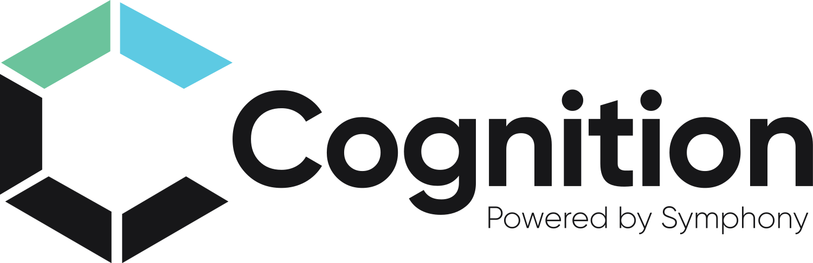
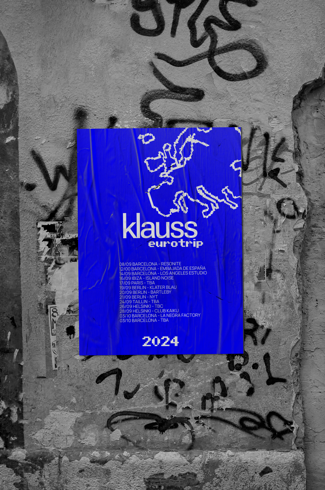
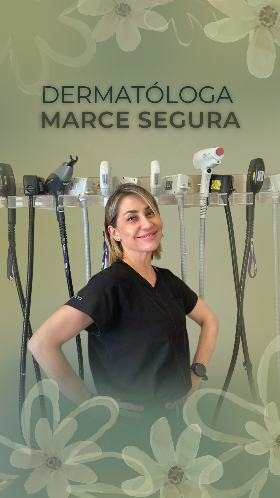

Imaginar
Encontrar la idea y su universo.
Comunica con Vicky
Dirección creativa & Copywriting
Para que tu audiencia te vea, te escuche y te entienda.
Encontrar la idea y su universo.
Ordenar mensajes, públicos, canales y objetivos.
Aplicar, observar y ajustar el sistema.
Abre posibilidades y define el universo de la idea.
Cómo la aplicoConcepto rector, tono y territorio creativo.
Ordena decisiones para convertir la idea en un sistema coherente.
Cómo la aplicoObjetivos, públicos, mensajes, canales y arquitectura de contenidos.
Permite que el sistema evolucione sin perder su identidad.
Cómo la aplicoCriterios, seguimiento y ajustes según cada formato y contexto.
Lo que hago
Concepto y criterio
Mensajes y estructura
Contenido y alcance
Proyectos
Tres universos distintos. Un mismo sistema para convertir complejidad en una comunicación clara.

Un sistema B2B para traducir IA, RPA y automatización, conectar con decisores y fortalecer el posicionamiento internacional.
Ver caso completo →
Klauss Euro Trip 2024 · Música
Narrativa audiovisual y edición de reels para promover los shows y mostrar la vida detrás del escenario.
Ver caso completo →
Dra. Marce Segura · Marca personal
Identidad, contenidos y un sistema propio para convertir conocimiento en confianza, consultas y autonomía.
Ver caso completo →Quién es Vicky
Soy Victoria Casella, comunicadora, copywriter y directora creativa. Ayudo a marcas y equipos a transformar ideas difíciles de explicar en sistemas de comunicación claros, propios y capaces de crecer.
Mi experiencia cruza estrategia, narrativa, contenidos y producción en tecnología, cultura, música, marcas personales y proyectos internacionales. Trabajo entre la sensibilidad y la estructura: detecto relaciones, encuentro el concepto y construyo el criterio que permite sostenerlo en el tiempo.
Blog & contenido
“La comunicación es una propiedad fundamental de los sistemas vivos”.
Escribo sobre lenguaje, sistemas, semiótica, creatividad y todo lo que pasa cuando una idea intenta encontrar su forma.
Cómo reconocer la tarea incómoda que puede mover tu proyecto y empezar a hacerla sin esperar motivación, certeza ni perfección.
Hagamos contacto
Contame tu proyecto o escribime aunque todavía no sepas cómo nombrar lo que necesitás.
comunicaconvicky@gmail.com